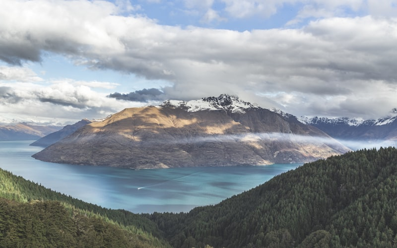
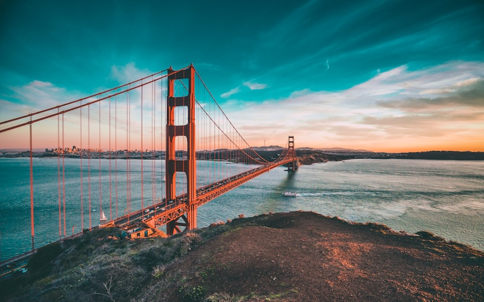
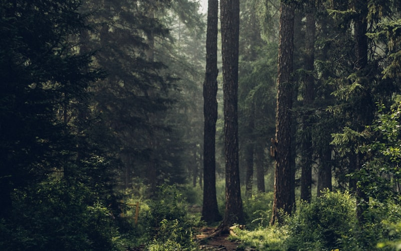

Pourquoi la Côte Ouest des USA en Road Trip ?
Le road trip sur la côte ouest des États-Unis est l'un des grands classiques du voyage, et pour cause. Aucune autre région au monde ne concentre autant de diversité paysagère sur un territoire aussi accessible : océan Pacifique, forêts de séquoias géants, déserts brûlants, canyons vertigineux, montagnes enneigées et métropoles iconiques se succèdent à un rythme effréné. C'est le voyage d'une vie, celui qui vous marque à jamais et vous donne envie de reprendre la route.
L'Ouest américain est aussi le territoire du rêve cinématographique. Chaque virage de route évoque un film, chaque paysage semble irréel. Les formations rocheuses rouges de Monument Valley, les falaises vertigineuses de la Pacific Coast Highway, les néons démesurés de Las Vegas : tout ici est plus grand que nature, littéralement. Avec un réseau routier impeccable, des aires de repos régulières et une culture du road trip profondément ancrée, les USA offrent les conditions idéales pour un premier grand voyage en voiture.
Itinéraire Détaillé : 3 Semaines sur la Côte Ouest
Semaine 1 : Los Angeles, Pacific Coast Highway et San Francisco
Étape culte à Big Sur
Le pont de Bixby Creek et les virages au-dessus du Pacifique sont les images les plus iconiques de la Highway 1.
Jours 1-2 : Los Angeles. Arrivée à LAX, récupération de la voiture de location et acclimatation. Explorez Santa Monica et sa célèbre jetée, Venice Beach et son boardwalk excentrique, Hollywood Boulevard et le Griffith Observatory pour une vue panoramique sur la ville et le panneau Hollywood au coucher du soleil. Côté culture, le Getty Center (gratuit) offre une collection d'art impressionnante avec vue sur tout Los Angeles.
Jours 3-4 : Pacific Coast Highway. La mythique Highway 1 entre Los Angeles et San Francisco est l'un des plus beaux itinéraires routiers au monde. Arrêts incontournables : Santa Barbara et son architecture espagnole, les vignobles de Paso Robles, le spectaculaire pont de Bixby Creek à Big Sur, les colonies d'éléphants de mer à Piedras Blancas et la charmante ville de Carmel-by-the-Sea. Prévoyez deux jours pour savourer cette route : les virages en corniche au-dessus de l'océan Pacifique sont hypnotisants mais demandent de la concentration.
Jours 5-7 : San Francisco. La ville la plus européenne des États-Unis mérite trois jours complets. Traversez le Golden Gate Bridge à pied ou à vélo, explorez le quartier de Fisherman's Wharf et l'île d'Alcatraz (réservez les billets 2 mois à l'avance), montez dans les cable cars historiques, flânez dans les quartiers de Mission (street art et burritos), Haight-Ashbury (héritage hippie) et Chinatown (le plus ancien des USA). Ne manquez pas les Painted Ladies, ces maisons victoriennes colorées face au skyline, ni les forêts de séquoias du Muir Woods à 30 minutes au nord.
Semaine 2 : Parcs nationaux de la Sierra Nevada au désert
Permis Half Dome
L'ascension du Half Dome à Yosemite nécessite un permis obtenu par tirage au sort sur recreation.gov.
Jours 8-10 : Yosemite National Park. Le parc national de Yosemite est un monument naturel d'une beauté stupéfiante. Les falaises de granit d'El Capitan (900 m de paroi verticale), les chutes de Yosemite Falls (739 m, les plus hautes d'Amérique du Nord) et le dôme poli de Half Dome composent un décor qui défie l'imagination. Randonnées recommandées : Mist Trail jusqu'à Vernal et Nevada Falls (aller-retour 8 km, dénivelé 600 m), Glacier Point pour un panorama à 360 sur la vallée, et la boucle de Mirror Lake au lever du soleil.
Jours 11-12 : Death Valley. Après la fraîcheur de Yosemite, le contraste avec la Vallée de la Mort est saisissant. C'est le point le plus bas, le plus chaud et le plus sec d'Amérique du Nord. Visitez le bassin de sel de Badwater Basin (-86 m sous le niveau de la mer), les formations multicolores d'Artist's Drive, les dunes de sable de Mesquite Flat et le panorama depuis Dante's View. Arrivez tôt le matin ou en fin de journée : les températures dépassent régulièrement 50 C en été. Emportez au minimum 4 litres d'eau par personne et par jour.
Jours 13-14 : Las Vegas. Après le silence du désert, le choc de Las Vegas est total. Le Strip et ses hôtels-casinos démesurés (Bellagio, Venetian, Caesars Palace) méritent une soirée de promenade. Au-delà du spectacle, Vegas est aussi la base idéale pour des excursions : le barrage Hoover, la Valley of Fire (roches rouges spectaculaires à 1 heure) et Red Rock Canyon. Un spectacle du Cirque du Soleil est un incontournable de la scène culturelle de Vegas.
Semaine 3 : Canyons, déserts et retour
Pass America the Beautiful
Pour 80 $, ce pass donne accès à tous les parcs nationaux américains pendant un an.
Jours 15-16 : Grand Canyon. Le Grand Canyon est l'une des merveilles naturelles les plus impressionnantes de la planète. Long de 450 km et profond de 1 600 m, il expose 2 milliards d'années de géologie. La South Rim est la rive la plus accessible et la plus spectaculaire. Marchez le long du Rim Trail, descendez une partie du Bright Angel Trail (ne tentez pas l'aller-retour jusqu'au fleuve Colorado en une journée), et assistez au lever ou au coucher du soleil depuis Mather Point ou Hopi Point. Les couleurs changeantes des strates rocheuses sont un spectacle permanent.
Jours 17-18 : Monument Valley et Antelope Canyon. Monument Valley, au coeur de la réserve Navajo, est l'icône absolue de l'Ouest américain. Ses buttes de grès rouge se dressant dans l'immensité désertique ont servi de décor à d'innombrables westerns de John Ford. Une visite guidée en 4x4 avec un guide Navajo (50-80 $ par personne) est fortement recommandée pour accéder aux zones restreintes et comprendre la signification culturelle des lieux. Le lendemain, réservez une visite d'Antelope Canyon près de Page, en Arizona : les jeux de lumière dans ce canyon en fente sont parmi les plus photographiés au monde.
Jours 19-20 : Zion National Park. Le parc national de Zion dans l'Utah clôture majestueusement ce road trip. Les falaises de grès rouge et blanc s'élèvent à 600 mètres au-dessus de la Virgin River, créant un paysage de cathédrale naturelle. La randonnée d'Angels Landing (8,7 km aller-retour, dénivelé 450 m, chaînes sur la crête finale) est l'une des plus spectaculaires et vertigineuses des USA. Le trail des Narrows, qui remonte la rivière entre des parois de 300 mètres, est une expérience unique (prévoyez des chaussures aquatiques). Un permis est désormais requis pour Angels Landing : réservez via recreation.gov.
Jour 21 : Retour vers Las Vegas ou Los Angeles. Selon votre vol retour, rejoignez Las Vegas (2h30 depuis Zion) ou Los Angeles (7h). Prévoyez une marge pour restituer le véhicule de location et arriver sereinement à l'aéroport.

Location de Voiture : Conseils et Pièges à Éviter
Quel véhicule choisir
Un SUV compact offre l'équilibre idéal entre confort, espace bagages et consommation pour les longues distances.
Frais cachés à éviter
Les one-way fees peuvent atteindre 400 $ : restituer le véhicule au même endroit que la prise en charge évite cette ligne.
La location de voiture aux USA est la clé d'un road trip réussi. Réservez sur des comparateurs comme Rentalcars.com ou Discover Cars au moins 2 mois à l'avance pour les meilleurs tarifs. Un SUV compact (type Jeep Cherokee ou Ford Escape) offre le meilleur compromis entre confort, espace pour les bagages et consommation d'essence. Comptez 1 200 - 2 000 EUR pour 3 semaines selon la saison et le modèle.
Points cruciaux : vérifiez que l'assurance CDW/LDW (collision damage waiver) est incluse ou souscrivez-la séparément (votre carte bancaire haut de gamme peut la couvrir). Les frais d'abandon (one-way fee) peuvent atteindre 200-400 $ si vous restituez le véhicule dans une ville différente de celle de la prise en charge. L'ajout d'un conducteur supplémentaire coûte 10-15 $ par jour. Le GPS intégré est inutile : Google Maps ou Maps.me sur votre smartphone suffisent largement avec une carte SIM américaine prépayée (T-Mobile ou Mint Mobile, 30-40 $ pour 30 jours).
L'essence (gas) coûte environ 1 - 1,30 $ le litre (4-5 $ le gallon), bien moins cher qu'en Europe. Les stations sont nombreuses sur les autoroutes mais rares dans les zones désertiques : faites le plein dès que la jauge descend sous la moitié dans les parcs nationaux et la Death Valley.
Budget Détaillé pour 3 Semaines de Road Trip
Le budget pour un road trip côte ouest de 3 semaines varie selon votre style de voyage. Voici une estimation par poste de dépense pour deux personnes :
Vols internationaux : 600 - 1 000 EUR par personne aller-retour Paris-Los Angeles en réservant 3-4 mois à l'avance. Les compagnies comme French Bee, Norwegian ou les vols avec escale (Icelandair, TAP) offrent les meilleurs tarifs.
Location de voiture : 1 200 - 2 000 EUR pour 21 jours, assurance CDW incluse. Essence : environ 400 - 600 EUR pour 5 000 - 6 000 km parcourus.
Hébergement : 1 500 - 3 000 EUR pour 20 nuits en combinant motels (80-120 $ la nuit), campings dans les parcs nationaux (20-35 $ l'emplacement) et quelques hôtels en ville (120-200 $ la nuit). Le pass America the Beautiful (80 $) donne accès à tous les parcs nationaux pendant un an, rentabilisé dès le deuxième parc.
Nourriture : 800 - 1 400 EUR. Les supermarchés américains (Trader Joe's, Walmart, Safeway) permettent de préparer pique-niques et petits-déjeuners. Comptez 15-25 $ par personne pour un repas au restaurant. Les portions américaines sont généreuses : un plat suffit souvent pour deux appétits modérés.
Total estimé pour 2 personnes : 5 500 - 9 000 EUR, soit 2 750 - 4 500 EUR par personne pour un voyage de 3 semaines incluant vol, voiture, hébergement, nourriture et activités.

Hébergement : Motels, Camping et Alternatives
Réservation des campings
Les meilleurs campgrounds de Yosemite et Zion s'arrachent 6 mois à l'avance sur recreation.gov.
L'hébergement sur la côte ouest offre une palette d'options pour tous les budgets. Les motels de chaînes comme Motel 6, Super 8 ou Quality Inn (60-100 $ la nuit) sont l'option la plus pratique pour un road trip : parking gratuit devant la porte, pas besoin de réservation longtemps à l'avance sauf en haute saison, et confort standardisé. Pour un cran au-dessus, les chaînes Best Western et Hampton Inn (100-150 $) incluent petit-déjeuner et piscine.
Le camping dans les parcs nationaux est une expérience magique et économique. Les campgrounds de Yosemite, du Grand Canyon et de Zion proposent des emplacements à 20-35 $ la nuit avec tables, foyers et douches à proximité. Réservez sur recreation.gov jusqu'à 6 mois à l'avance pour les sites les plus prisés. Le camping sauvage (dispersed camping) est autorisé gratuitement sur les terres fédérales BLM, très répandues dans le Nevada, l'Utah et l'Arizona.

Meilleure Période pour un Road Trip Côte Ouest
La meilleure période pour la côte ouest s'étend de mai à octobre, avec des nuances importantes. Mai-juin offre des températures agréables partout, les cascades de Yosemite sont à leur débit maximal et les foules sont modérées. Juillet-août est la haute saison : les parcs nationaux sont bondés et Death Valley est une fournaise, mais les journées sont longues et le temps est garanti.
Septembre-octobre est notre période préférée : les températures sont idéales, les parcs se vident après la rentrée scolaire, les tarifs d'hébergement baissent de 20-30 % et la lumière automnale sublime les paysages. Évitez l'hiver (novembre-mars) pour cet itinéraire complet : de nombreuses routes de montagne (Tioga Pass à Yosemite, routes en altitude à Zion) sont fermées par la neige.
Conseils Pratiques et Formalités
ESTA et passeport
L'ESTA coûte 21 $ et reste valable 2 ans pour des séjours touristiques de 90 jours maximum.
Assurance santé indispensable
Une consultation aux urgences peut coûter 5 000 $ sans assurance : ne partez jamais sans couverture spécifique USA.
Pour entrer aux États-Unis, les ressortissants français doivent obtenir une autorisation ESTA (Electronic System for Travel Authorization) au moins 72 heures avant le départ, au coût de 21 $. Le passeport biométrique est obligatoire et doit être valide pour toute la durée du séjour. L'ESTA est valable 2 ans pour des séjours de 90 jours maximum.
Le décalage horaire est de -9 heures entre Paris et la côte ouest (heure du Pacifique). Prévoyez 2-3 jours d'adaptation. Le permis de conduire français est suffisant pour louer et conduire aux USA, mais un permis international est recommandé. Attention aux limitations de vitesse strictement contrôlées : 65-75 mph (105-120 km/h) sur les autoroutes, 25-35 mph en ville. Les amendes sont salées et le radar est omniprésent.
Prévoyez une assurance santé voyage impérativement : les frais médicaux aux USA sont astronomiques (une simple consultation aux urgences peut coûter 2 000 - 5 000 $). Des assureurs comme Chapka, ACS ou Allianz Travel proposent des couvertures adaptées pour 50-100 EUR pour 3 semaines.
Consultez notre guide complet de l'Amérique du Nord pour découvrir toutes les destinations du continent. Pour une ambiance radicalement différente, explorez notre guide du Canada en automne et ses paysages flamboyants d'été indien.